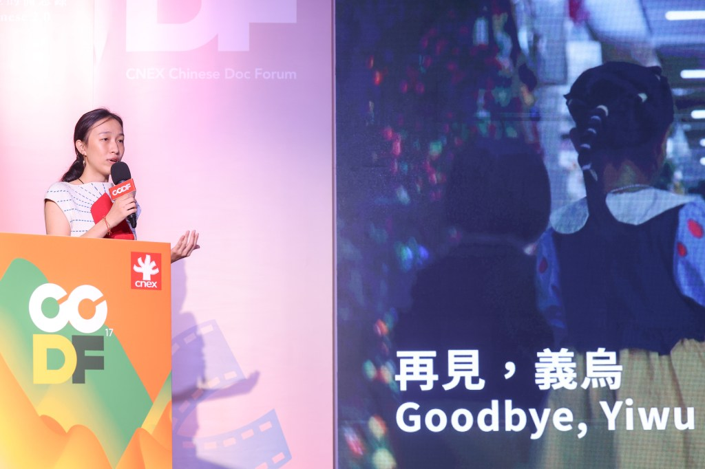

Documentary
Time spent listening. Stories shaped by the people who live them.

LELE Films / A beginning
LELE Films begins with the documentary practice of Elena Lecun Xiang. A space for films rooted in real lives, and for the people who make them together.
Time spent listening. Stories shaped by the people who live them.
A close attention to people, places and the small details that carry a story.
Finding the rhythm, the relationships and the feeling within the footage.
The foundation: Elena’s practice as a filmmaker, cinematographer and editor.
The filmmaker

Filmmaker · Cinematographer · Editor
Elena Lecun Xiang is a Chinese documentary filmmaker, cinematographer and editor based in New York City. A graduate of NYU’s News & Documentary Program, her work explores migration, belonging and motherhood.
Explore Elena’s archive (opens in a new tab)The next story is still unwritten.
Our studio is taking shape.
Company contact details will be announced here.